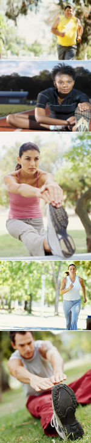

Weekly Live, Online Webinars
Dial in or listen in via the web as our
Expert Doctors, Fitness Coaches, and Guests discuss a topic of the week
(Return to this page on the date of event to gain access)
- How does diet and exercise affect my heart and circulation? Monday, May 11, 2009 - 7 pm e.s.t.
- Can I lose the weight I want to by just doing cardio? Monday, May 18, 2009 - 7 pm e.s.t.
- What about all these aches and pains? I didn't have them in high school. Tuesday, May 26, 2009 - 7 pm e.s.t.
- If it's nothing more than calories-in versus calories-out, why can't I eat whatever I want as long as I don't eat too much? Monday, June 1, 2009 - 7 pm e.s.t.
- Prevention and modification of diabetes and its complications. Monday, June 8, 2009 - 7 pm e.s.t.
|
Weekly Live, Online Chat Room
Chat via online-text messaging through our chat room as our
Expert Doctors, Fitness Coaches, and Guests discuss a topic of the week
Ask any question! It's fun and private!
(Return to this page on the date of event to gain access)
|
- Getting started with a diet. Thursday, May 14, 2009 - 12 pm e.s.t.
- Getting started with exercise.Thursday, May 21, 2009 - 12 pm e.s.t.
- Getting support from your family & friends. Thursday, May 28, 2009 - 12 pm e.s.t.
- Dieting and eating right doesn't have to be expensive. Thursday, June 4, 2009 - 12 pm e.s.t.
- You decide! Hop online and chat about anything related to getting healthy & exercise. Thursday, June 11, 2009 - 12 pm e.s.t.
|
Events Within 25 Miles of
Mooresville, NC
Ballantyne Village and Morrison Family YMCA
May 16, 2009
Charlotte, NC
King Tiger 5K at University City 2009
Jun 06, 2009
Charlotte, NC
The China Grove 5k Main Street Challenge 2009
Jun 12, 2009
China Grove, NC
Run/Walk for the Greenway 5k & Fun Run
Jul 25, 2009
Salisbury, NC
Tomato Trot
Aug 15, 2009
Cleveland, NC
The Great Urban Race
Sep 12, 2009
Charlotte, NC
New Event Updates to come!
|

|